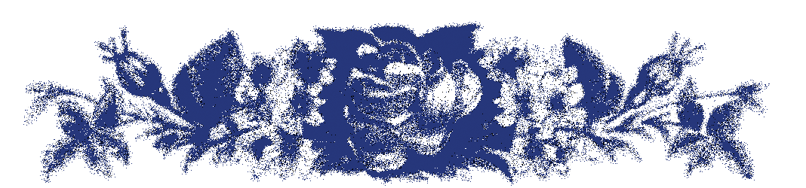
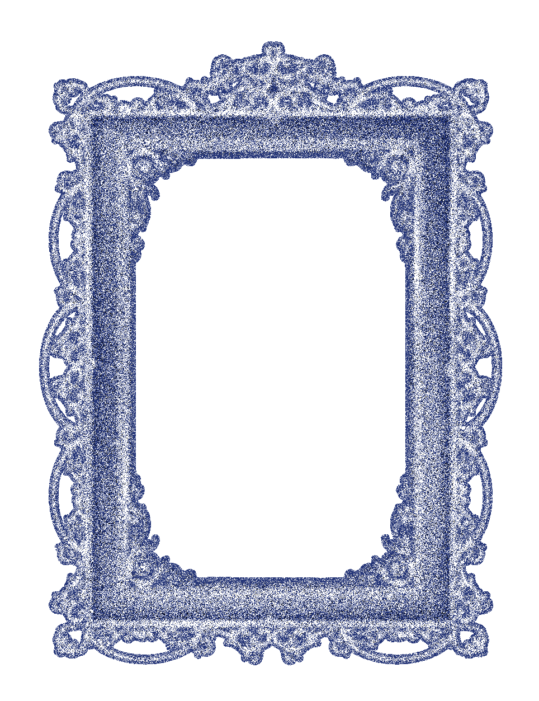
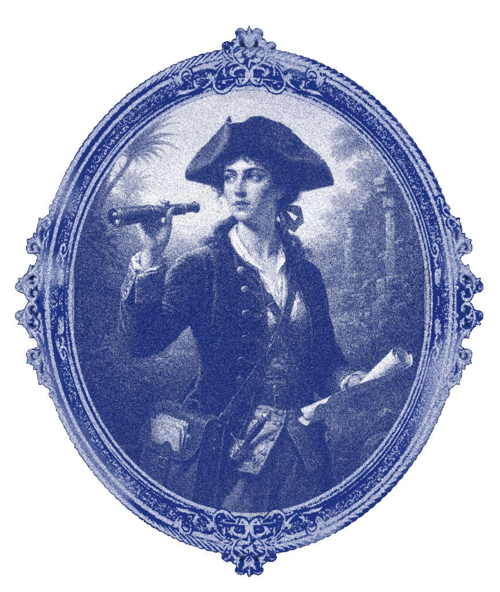

Glypharium


Nei bestiari antichi, gli animali venivano spesso disegnati in modo impreciso: creature mai viste, descritte per sentito dire, nate dall’immaginazione più che dall’osservazione.
Quelle figure "sbagliate" erano però piene di vita, sospese tra realtà e mito e raccontavano lo scorrere del tempo e l’evoluzione di interi popoli e culture.
Questo progetto vuole interpretare l'errore come forma creativa: lettere che trovano armonia nelle loro imperfezioni.
Ogni lettera possiede un’anima, la cui forma segreta richiama inaspettatamente un animale reale.
Così, come i bestiari di un tempo, non vogliamo imitare la realtà, ma reinventarla, mostrando che la forma delle lettere nasconde in realtà una propria vita.



I Cronoglifidi
Nel mondo di Beth il tempo era composto da ventisette lettere viventi chiamate Cronoglifìdi. Non erano semplici segni, ma spiriti dall’aspetto di lettere animate, ognuna modellata sui movimenti e sull’indole di un animale diverso.
Alcune erano rapide e nervose, altre lente e silenziose; insieme formavano l’alfabeto invisibile che permetteva al tempo di scorrere in modo ordinato.



Quando l’ultima lettera fu trascritta, il tempo smise di arretrare. Beth non tornò semplicemente a invecchiare: tornò a riconoscersi. La sua storia parlava di identità, memoria e del tentativo di ritrovarsi mentre tutto, fuori e dentro di lei, sembrava muoversi al contrario.